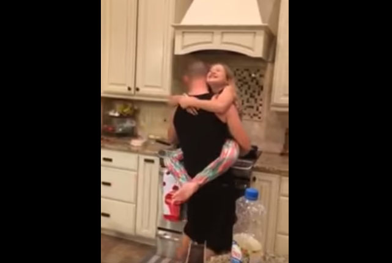

Santé Psy Étudiant
 Accéder au contenu Accéder au menu Accéder au footer Ministèrede l'Enseignement
Supérieur,
de la Recherche
et de l'Innovation Santé Psy Étudiant
Accompagnement psychologique pour les étudiants
Étudiants, parlez de vos difficultés
Consultez un psychologue gratuitementComment ça se passe ?
Trois étapes indispensables
1. Consultez un médecin Votre médecin généraliste ou votre Service de Santé Universitaire vous oriente vers un accompagnement psychologique. 2. Choisissez un psychologue Vous choisissez le professionnel qui vous accompagnera parmi la liste des psychologues partenaires. 3. Bénéficiez d un suivi Vous prenez rendez-vous avec votre psychologue, qui vous suivra pendant 3 séances. Votre médecin pourra les renouveler si besoin.Étudiants, psychologues, médecins, vous souhaitez plus d’informations ?
Consulter la Foire Aux QuestionsJe suis étudiant, étudiante
Tous les étudiants du supérieur sont éligibles (universités, écoles publiques et privées, BTS, ...), de toutes les nationalités.
Pour commencer le parcours de soins, si vous connaissez votre Service de Santé Universitaire, contactez les. Sinon, vous pouvez également contacter votre médecin traitant ou un médecin généraliste.
Lorsque votre médecin (universitaire ou généraliste) vous aura orienté vers des séances de psychologue, vous pourrez choisir parmi les psychologues partenaires :
Trouver un psychologue
Des questions, des doutes sur le dispositif ?
Consulter la Foire Aux Questions
Nous vous suggérons aussi ce site de conseils pour gérer ses difficultés pendant cette période de crise :
Voir le site www.soutien-etudiant.infoJe suis psychologue
Vous souhaitez participer au programme d'accompagnement psychologique des étudiants ? Merci !
Une fois inscrit, et en cas d'éligibilité, vos coordonnées apparaîtront dans l'annuaire public des psychologues partenaires sur cette plateforme. Une université vous contactera ensuite pour établir une convention. Cette convention garantira le remboursement de l'ensemble des consultations que vous réaliserez dans le cadre de ce dispositif.
Consulter la Foire Aux Questions
Vous voulez devenir psychologue partenaire du dispositif ?
Commencer mon inscriptionVous avez déjà reçu la validation suite à la démarche ?
Déclarer mes séances Ministèrede l'Enseignement
Supérieur,
de la Recherche
et de l'Innovation
Le code source est ouvert et les contributions sont bienvenues. Voir le code source
Contactez-nous etudiant.gouv.fr Enseignement supérieur beta.gouv.fr Accessibilité: non conforme Données personnelles et gestion des cookies Mentions légales En savoir plus © République Française 2021